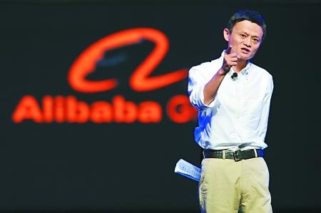

时间：2015-06-12 09:08:23 来源：腾讯科技 作者：佚名
如果要评选一个上半年最活跃大佬，马云绝对会登上前三。从纽约到台湾，从达沃斯到证监会，各种言论一出，便轻松抢占媒体头条。
网络上关于马云的语录都能出好几本书了， 2015刚刚过半，不妨看看马云都说过什么。
6月10日，纽约经济俱乐部的午餐会：
如果有来生，我一定不上市
被问及为何选择让阿里上市，马云回答说：“如果我有下辈子，我会让我的公司保持私有化。在IPO之前，生活已经很艰难了。在IPO之后，生活变得更艰难。”
马云感叹，上市之后，要求多多的股东给公司带来了很多的负担。马云还批评了美国企业文化中独立董事制度，抱怨说一些董事会成员往往表现得像个律师，只会在事后对同事发表评论。
马云在演讲中还表示，“第三次世界大战将至，在这场战争中，各国联手合作，共同对抗疾病、贫穷和气候变化，我认为这就是我们的未来。”
阿里巴巴电子商务业务的全球化，将有助于“第三次世界大战”。而且阿里巴巴的运作方式和亚马逊截然不同，阿里巴巴并不是亚马逊的敌手。
阿里巴巴集团不采购或零售任何商品，也没有自己的仓库或者商品库存。阿里巴巴要提供一个全球性的电子商务平台，让中小企业在互联网上获得成功，他也希望美国的中小企业能够利用阿里巴巴的平台。
6月4日，阿里巴巴与第一财经战略合作签约仪式：
希望中国诞生自己的华尔街日报、彭博社
阿里巴巴集团宣布12亿元入股第一财经。马云在签约仪式上说，“互联网+”的核心思想就是把互联网和传统经济加起来，整个互联网才能活得久、活得好，所以阿里一直在思考如何帮助健康、娱乐、文化产业。
这次与一财合作也是在去了世界很多地方，接受世界媒体采访后，一直希望中国诞生自己的华尔街日报、彭博，真正有自己代表世界这一面的声音。
阿里对数据以前是开放的，现在决定原则上不开放，不开展的原因是什么?因为我们认为现在我们在完全没有保障数据安全、数据隐私的情况下，必须保障数据的安全和隐私，我们只给我们的战略合作伙伴共同打造未来。
5月26日，贵阳国际大数据产业博览会：
倒吸一口凉气，幸好是15年前创业
前段时间我面试了六个年轻人，我真是倒吸了一口凉气：我幸好是15年前创业，要是今天创业，肯定被这帮小子活活搞死，因为他们用的是大数据，他们用的是互联网模式，他们说的很多东西我不是很理解，但是我相信，一旦我理解，我会越来越恐慌。
未来的组织不是公司雇佣员工，而是员工雇佣公司，这一系列的变化是因为整个技术发生了巨大的变化，因为数据的产生，人类整个社会商业发生变化一定会造成整个社会发生变化，经济、政治体系发生变化。
5月20日，全球女性创业者大会：
女人是阿里巴巴成功的第一要素
女人是这个时代的主力军。阿里巴巴70%的买家是女性，55%的卖家也是女性;49%的员工是女性，34%高管也是女性。在社会的各个领域，女性扮演着越来越重要的角色。
我们一直在思考，是什么原因让阿里这么成功，我在韩国做了一些调查，发现今天活得不错、生存下来的最好的企业，基本上女性成为大多数。所以我们在女性论坛，分享我们的经验。希望五年、十年后，我们真正迎来世界进入女性的时代。
5月20日，《中国新闻周刊》专访：
智商是读书读出来的，情商是倒霉倒出来的
不建议大学生辍学创业，创业还是要理性看待的。
如果你想创业，30岁到40岁之间是合适的。20岁左右，完善你的知识结构，20到30岁要学的是体验，体验什么呢?体验灾难、苦难、错误，没有足够的灾难、苦难、错误、折磨，你是永远不可能练出情商来的。
智商是可以读书读出来的，情商则是倒霉倒出来的。所以，30岁之前智商和情商有些基础以后，再选择自己去创业。
如果选择了创业这条路，就给自己一个承诺，千万别说，我试试看，不行马上跑，这样的创业基本上不会成功。
4月底，北京员工大会：
阿里今年停止增加新员工
马云宣布更新阿里集团自2009年时设立的目标，将其中的“服务十亿消费者”正式改成服务“二十亿”，并表示在这一全球化发展目标中，北京团队将成为“电子商务以外的互联网服务”的大本营。
但马云认为，阿里发展确实太快，今年阿里员工数不会增加一个人，员工整体上限五万人。正在摸索、创造一种新的运营管理模式，通过内部协调提升工作效率。
3月20日，中国发展高层论坛2015：
大部分互联网公司活不到三年
马云在参加“20人午餐会”时，发表了主题为《DT(Data Technology)时代的特色》的演讲。
许多传统企业担心受到互联网行业的冲击，但是马云认为，大部分互联网公司活不到三年，因为目前社会正处在DT时代，而这需要完全不同的思考方式。
马云讲到，“工业革命在于增强肌肉力量，而数据科技的世界依赖于知识，创造力和适应性。美国和中国有着纯粹的互联网公司，而欧洲更加根植于传统行业。互联网缺失的那部分，是鼠标和水泥的结合，把数据科技和传统制造业结合起来，未来的可能性是无限的。”
3月15日，汉诺威IT博览会：
未来最大的能源不是石油而是大数据
马云在演讲中表示，“未来的世界，我们将不再由石油驱动，而是由大数据驱动;生意将是C2B而不是B2C，用户改变企业，而不是企业向用户出售——因为我们将有大量的数据;制造商必须个性化，否则他们将非常困难。”
马云还强调，改变世界的不是技术，而是技术背后的梦想。 “如果是科技改变了世界，我不会在这儿，我没有被训练成一个科技专家，我对电脑一无所知，我对互联网也了解的不多。但是我有一个强大的梦想，我要帮助中小企业。”
3月3日，台湾大学：
没淘宝超市也活的不好
马云分享了自己十五年创业的经验，同时也阐述了他心目中的创业者三大素质：乐观，自省，坚持。台下观众除台湾多个知名学府的学生外，还包括郭台铭等多位台湾知名企业家。
针对淘宝冲击了线下传统超市的说法，马云辩解道，即使没有淘宝，超市也卖不好，“因为消费者需求愈来愈个性化，而这就是社会的发展。”
2月10日，证监会：
以前想与微信竞争 现在会鼓掌
马云率团队主要成员做互联网金融分享时表示，原来会想做个东西和微信竞争，但现在会为微信鼓掌。
谈及中国互联网公司都是局域网问题时，马云表示，只有知道什么不能开放，才能做到真正的开放。中国的未来一定是属于年轻人的，但是封建基因在中国的根基太强大，不是一下子可以改变，阿里正在改变。
原来会想做个东西和微信竞争，但现在会为微信鼓掌。这种竞争是一种乐趣，大家会在竞争中此消彼长。
2月2日，香港青年创业者交流会：
淘宝没有那么多假货 会坚持打假
马云表示，淘宝没有那么多假货，如果你投诉，我们立刻有反应，但你不投诉，(我们)是很难发现的，毕竟我们要处理的是12亿的商品。
马云同时指出淘宝有严格的监察制度，只要投诉立刻有反应，去年更因此问题将400多人送入监狱，“这个很难做，很得罪人，但是我们会坚持下去”。
1月23日，冬季达沃斯论坛：
被哈佛拒绝了10次
我们需要学会习惯被拒绝，即使是现在。
我在找工作的时候被拒绝了三十多次。去肯德基应聘，24个人收下了23个，我是唯一一个被拒绝的。
我去考警察，5个人招4个，我又是唯一一个被拒绝的。
后来我申请哈佛，被拒绝了10次